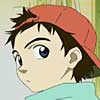

|  | Although only 12 years old and in the 6th grade, Naota tries to act like he's a grown-up. He has an older brother who went to the US to play baseball. Now his brother's girlfriend is sending him mixed signals, in addition to a Vespa woman hitting him with a bass guitar. Now horns and robots constantly sprout from Naota and things get even stranger... |
| Haruko, who claims to be 19 years old, looks like a typical attractive teenager except for the fact that she's actually an alien. Tomboyish and eccentric, she rides around on a Vespa and carries an electric guitar that she swings around quite freely. So freely in fact that she hits Naota in the head with it. |
| Seventeen years old, Mamimi is Naota's brother's girlfriend. But one wouldn't be able to tell from the way she acts. Ever since Naota's brother left for the US she's been trying to fill the gap he left with other diversions, one being Naota. A habitual smoker and truant, she loves to play video games and believes in the supernatural. |
| Kamon, a would-be editor, is Naota's father. Unlike his son, he is clearly outgoing and does what he pleases. Naota often reprimands his father for not acting like an adult. |
| Outgoing and confident, Eri, Naota's classmate, is the class president. Like Naota, she finds herself surrounded by immature adults who in her eyes behave like children. As a result she tries to act grown-up, but learns to come into her own. |
| Amarao is a special agent of the Bureau of Interstellar Immigration. He apparently has some past with Haruko and claims to know who or what she really is. Amarao's childhood also seems to mirror that of Naota's. |